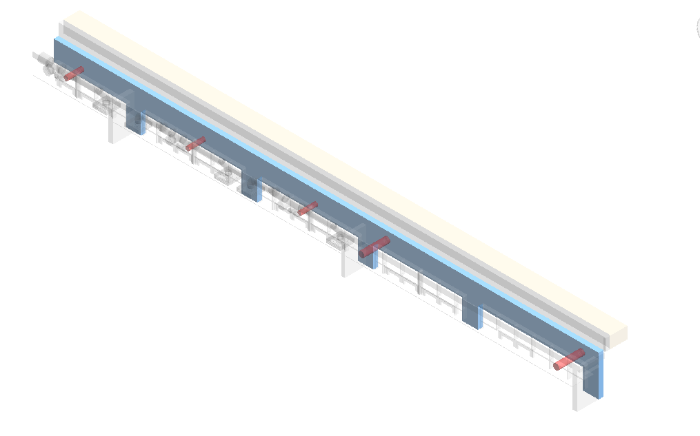
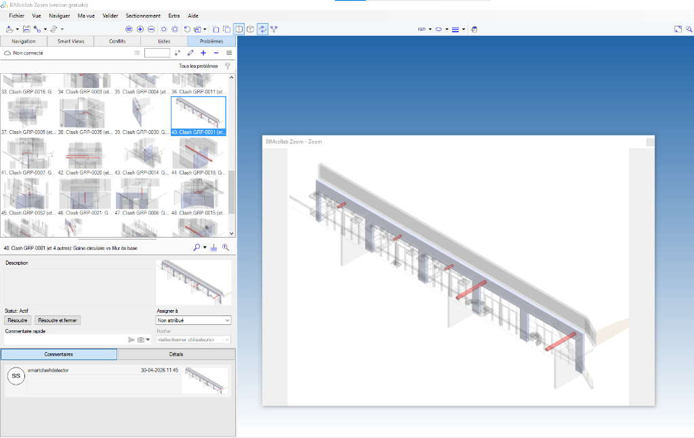
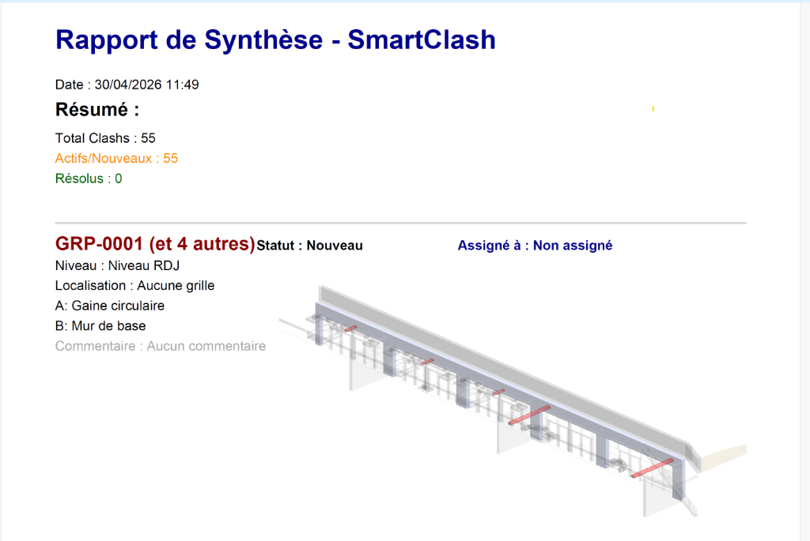

📘 Manuel de Présentation & Utilisation : SmartBimPeï
SmartBimPeï est la suite logicielle professionnelle ultime intégrée à Revit, conçue pour transformer le processus fastidieux de synthèse technique et de nettoyage de maquettes en une expérience fluide, automatisée et hautement fiable.
🌟 Introduction : Pourquoi SmartBimPeï ?
À qui s'adresse cet outil ?
Ce plugin a été pensé par et pour les BIM Managers, les Coordinateurs BIM, les Projeteurs (CVC, Plomberie, Elec, Archi) et les Chefs d'Entreprise.
Quelle est sa mission principale ?
Dans le monde du BIM, la détection des conflits (clashs) et leur résolution (création de réservations, communication) sont des processus chronophages qui coûtent extrêmement cher aux entreprises. SmartBimPeï supprime ces goulots d'étranglement grâce à :
- L'automatisation intelligente : Oubliez la création manuelle de réservations un par un. Le plugin gère des fusions de réseaux complexes et des murs courbes.
- La communication standardisée : En utilisant les standards OpenBIM (BCF), vous facilitez la communication avec les équipes externes sur des plateformes comme BIMcollab ou BIM Track.
- La visibilité de gestion : Un tableau de bord décisionnel permet aux chefs d'entreprise d'évaluer la santé du projet en un coup d'œil.
⚙️ Module 1 : Smart Clash Detector (Le Moteur de Synthèse)
Ce module est le cœur de SmartBimPeï. Il ne se contente pas de trouver des clashs ; il les comprend pour vous proposer des solutions concrètes.

1.1 Le Panneau de Configuration (À gauche)
Ce panneau vous permet de paramétrer votre recherche de façon chirurgicale.
Sélection Modèle A & Modèle B
⚙️ Utilisation : Choisissez les modèles à croiser (ex: Modèle Architectural Hôte vs Lien Réseaux MEP).
💎 Plus-value : Évite d'analyser toute la maquette inutilement. Vous ciblez précisément les corps d'état qui vous intéressent (ex: Murs vs Gaines).
Tolérance (mm)
⚙️ Utilisation : Définissez la distance de pénétration acceptable avant de signaler un clash.
💎 Plus-value : Évite les "faux positifs" causés par des affleurements de quelques millimètres qui seront facilement réglés sur chantier.
Filtres "Taille min." (Modèles A et B)
⚙️ Utilisation : Saisissez une dimension minimale (ex: 70mm pour les murs, 40mm pour les tuyaux) sous laquelle l'élément est purement ignoré.
💎 Plus-value : Temps de calcul drastiquement réduit et pertinence accrue. On ne perd pas de temps à faire des réservations pour un tuyau multicouche de 16mm qui peut être percé à la perceuse sur chantier.
Marge Auto-Réservation
⚙️ Utilisation : Indique le débord (ex: 50mm) qui sera ajouté autour de la gaine lors de la pose du vide.
💎 Plus-value : Permet d'anticiper l'isolation de la gaine et le calfeutrement au feu sans avoir à faire de calculs manuels.
1.2 Le Tableau de Synthèse (Au centre)
Le Regroupement Intelligent (Smart Grouping)
⚙️ Ce que ça fait : Si un mur est traversé par 3 gaines très proches, l'outil ne crée pas 3 clashs différents, mais un seul ID de clash regroupé.
💎 Plus-value : Réduit la fatigue visuelle du coordinateur et permet de traiter le problème dans son ensemble plutôt qu'au cas par cas.
La Colonne "Dimension Resa"
⚙️ Ce que ça fait : Affiche en direct les dimensions finales du trou généré (Largeur x Profondeur) après avoir cliqué sur générer.
💎 Plus-value : Le projeteur voit immédiatement l'impact architectural du vide sur la maquette sans avoir à aller l'inspecter. S'il voit 1500 x 500, il sait tout de suite qu'il faut alerter le bureau d'études Structure.
1.3 Les Actions de Résolution (En bas)
Bouton 👁️ "Isoler Clash"
⚙️ Utilisation : Ouvre une vue 3D centrée sur le clash sélectionné.
💎 Plus-value : Contrairement aux outils standards de Revit, SmartBimPeï applique une charte graphique professionnelle : les éléments en conflit apparaissent en couleurs vives transparentes, tandis que le reste du bâtiment passe en gris neutre. L'œil comprend le problème en 1 seconde chrono.

Bouton 🕳️ "Générer Auto-Réservation(s)"
⚙️ Utilisation : En un clic, place des familles de "vides" paramétriques à l'emplacement exact des clashs.
💎 Plus-value : C'est la fonctionnalité phare du logiciel. Le moteur gère la Sliver Tolerance (fusionne automatiquement deux réservations trop proches pour éviter d'affaiblir le mur) et comprend l'orientation complexe des murs courbes. Ce qui prenait 10 minutes par trou prend maintenant 1 milliseconde.
1.4 Les Exports & Rapports (La Communication)
Export BCF (BIM Collaboration Format)
⚙️ Utilisation : Génère un fichier standard .bcfzip regroupant les caméras, les statuts et les commentaires de tous vos clashs.
💎 Plus-value : Un atout majeur pour la synthèse OpenBIM. Ce fichier s'importe sur des plateformes comme BIMcollab, BIM Track, ou Navisworks. Lorsque l'ingénieur MEP clique sur un clash sur la plateforme web, son logiciel l'emmène directement à la bonne vue 3D. Fini les échanges d'emails interminables avec des captures d'écran floues.

Export PDF & CSV
⚙️ Utilisation : Exporte un rapport visuel ou un tableur Excel.
💎 Plus-value : Parfait pour distribuer lors de la réunion de synthèse hebdomadaire aux chefs de chantier ou sous-traitants qui n'ont pas accès à Revit.

Sauvegarder / Charger (XML)
⚙️ Utilisation : Enregistre votre session de travail actuelle.
💎 Plus-value : Permet de fermer son PC le vendredi soir et de recharger sa session exactement là où on l'avait laissée le lundi matin, sans devoir refaire de calculs.
📈 Module 2 : Health Dashboard (Tableau de Bord BIM)

🎯 Le coup d'œil de la direction : Le Dashboard est la tour de contrôle de votre projet.
⚙️ Utilisation : Cliquez sur le Dashboard pour analyser instantanément les indicateurs clés de la maquette (Nombre de clashs totaux, résolus, actifs).
💎 Plus-value : Conçu avec un moteur géométrique à haute précision (Intersection réelle de solides). Le chef d'entreprise peut l'ouvrir en réunion pour prouver l'avancement du projet : Si le projeteur a posé 130 réservations hier, le compteur affichera mathématiquement une baisse nette le lendemain matin. C'est l'outil ultime de valorisation du travail accompli.
🧹 Module 3 : Duplicate Detector (Nettoyeur de Maquette)

⚙️ Utilisation : Lance une analyse complète pour trouver les éléments MEP superposés exactement au même endroit.
💎 Plus-value : Une maquette propre est primordiale pour la justesse des quantitatifs. Si une gaine est modélisée deux fois au même endroit, on la commande et on la facture deux fois. Ce module empêche des erreurs financières majeures.
💰 Module 4 : Métré Express (Quantities & Pricing)

⚙️ Utilisation : Extrait automatiquement les quantitatifs de la maquette et croise ces données avec votre bibliothèque de prix.
💎 Plus-value : Transforme instantanément la géométrie de Revit en un devis financier précis. Gain de temps colossal pour les économistes de la construction et les équipes d'appel d'offres.
Ce manuel est conçu pour accompagner la montée en compétence des équipes. SmartBimPeï n'est pas qu'un simple outil, c'est un atout concurrentiel majeur pour vos processus BIM.